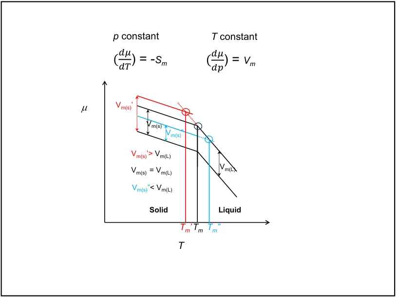
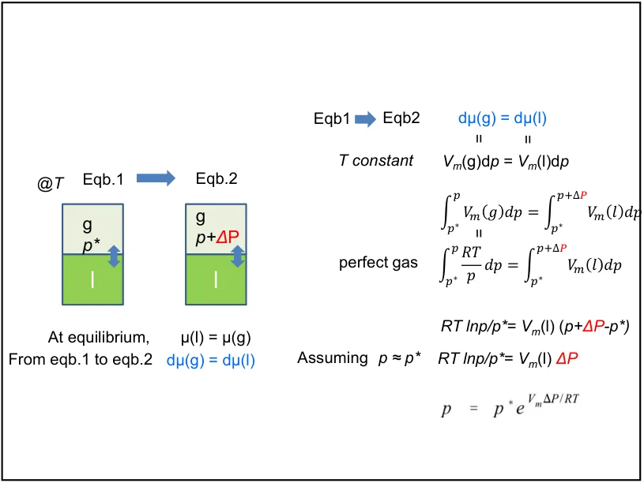
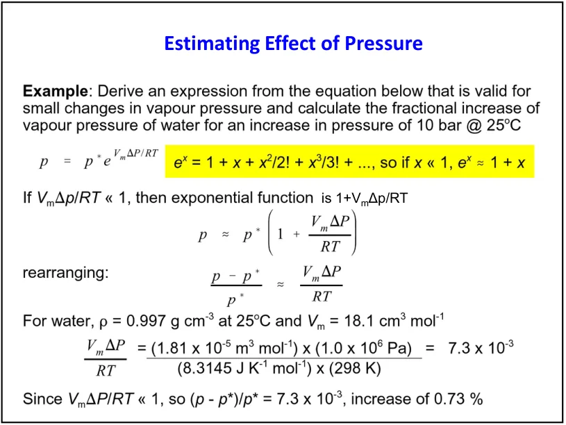
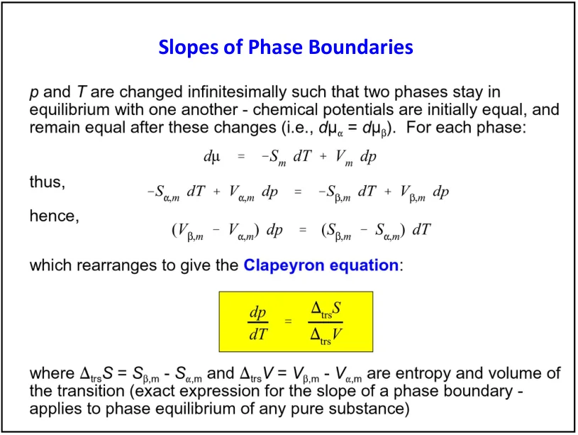
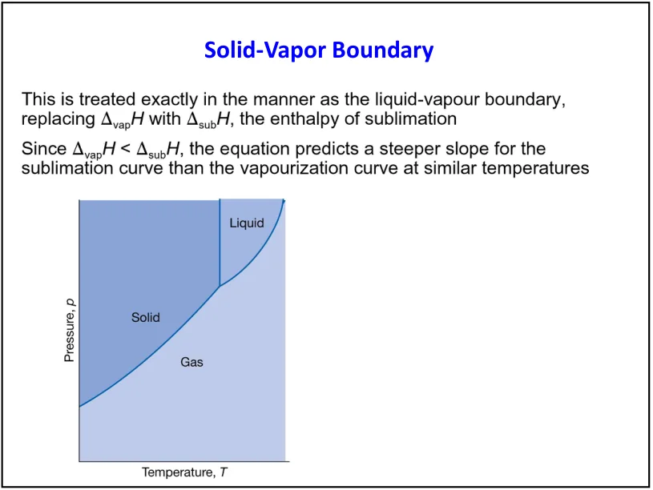
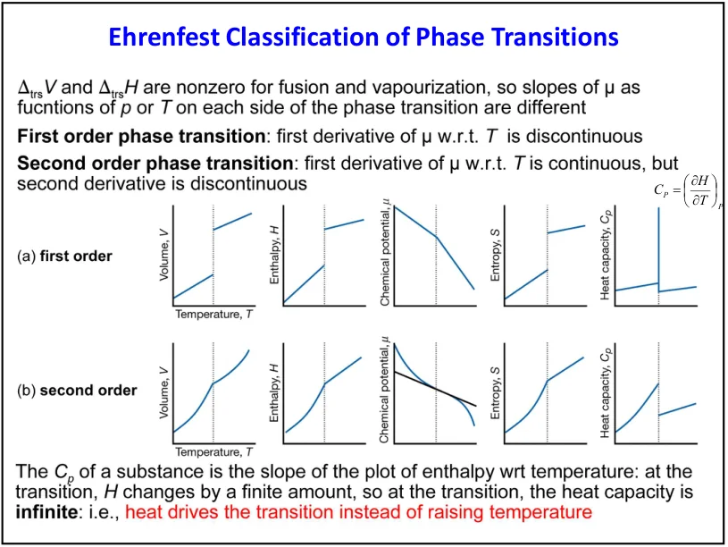
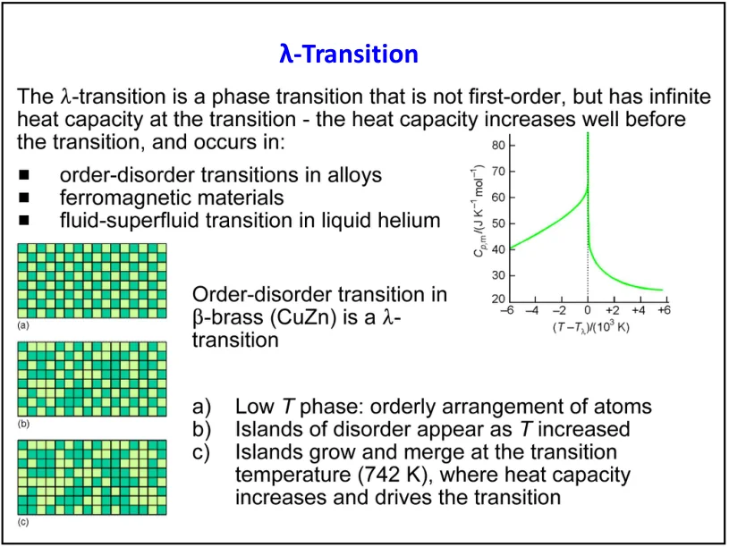

LECTURE 10 · 2026/10/15
相界线、Clapeyron方程与相变类型
Physical transformations of pure substances
1. 知识体系：从dμ推到相界线
第9课确定稳定相的μ最低、共存两相μ相等。这一课进一步问：改变温度或压力后，怎样继续维持相平衡？核心路径是dμ=Vm dp−Sm dT、共存线上的dμα=dμβ、Clapeyron斜率，再根据气体近似得到Clausius–Clapeyron方程。
| 任务 | 条件 | 结果 |
|---|---|---|
| 加压改变稳定性 | 恒温，比较两相Vm | 较小摩尔体积的相更受升压有利 |
| 加压改变蒸气分压 | 液体承压与蒸气分压分别记号 | Poynting压力修正 |
| 沿两相共存线改变温压 | μ相等且微小变化仍相等 | Clapeyron方程 |
| 估计沸点与蒸气压 | 理想蒸气、液体体积可忽略 | Clausius–Clapeyron近似 |
| 判断相变阶数 | 观察G及其导数连续性 | 一阶、连续转变与λ异常分开 |
本页覆盖合集PDF第12–23页。字母约定：小写p表示压力；p*表示不额外加压时的平衡蒸气压；Pℓ表示液体承受的总压；ΔP=Pℓ−p*表示相对参考液体压力的改变量。
2. 恒温加压：摩尔体积决定μ的变化
因为摩尔体积为正，升压会使各相μ上升。比较稳定性却要看哪一相上升得更多：Vm大的相受罚更大，Vm小的相相对有利。近似式要求温度固定、摩尔体积在压力范围内变化不大。

一般熔化时液体体积更大，所以升压提高熔点；普通冰I熔化体积更小，所以升压降低熔点。若在某条件下两相摩尔体积相等，一级压力变化不改变它们的相对μ，熔点的一级压力响应为零。
用ρ冰=917 kg·m⁻³、ρ水=999 kg·m⁻³、M=0.01802 kg·mol⁻¹，Vm=M除以ρ。得到Δμ冰≈1.97 J·mol⁻¹，Δμ水≈1.80 J·mol⁻¹。若原来恰好共存，加压后水的μ更低，冰有熔化趋势。别忘1 Pa·m³=1 J。
来源：本次课件PDF第12–13页；Atkins第11版 §4B.1(b)。页码指PDF页面，每页通常含两张幻灯片。
3. 液体承压与蒸气分压：Poynting修正
恒温下用机械方式加压液体，或在其上方加入不反应的加压气体，可以提高液体化学势。若忽略该气体溶入液体及气相非理想效应，蒸气要提高自身分压才能重新与液体平衡。蒸气分压变化和液体总压力变化是两个不同的量。
μℓ(T,Pℓ)−μℓ(T,p*)=∫p*PℓVm,ℓdPℓ
利用两端均为相平衡，使上述两个差值相等。液体近似不可压缩、蒸气为理想气体时：
指数无量纲：Vm的m³·mol⁻¹乘Pa得到J·mol⁻¹，与RT相同。若课件把惰性气体附加压记作ΔP，而液体总压为p+ΔP，那么严格上限应为p+ΔP；只有蒸气压变化很小时，才可把其中p替为p*。本页以实际液体总压Pℓ定义，避免同一个dp同时指两个压力。

令x=Vm,ℓΔP除以RT；当|x|≪1时可用exp(x)≈1+x，得到相对改变：
课件例题：25℃水Vm=18.1 cm³·mol⁻¹=18.1×10⁻⁶ m³·mol⁻¹，液体增压10 bar=10⁶ Pa，x≈0.00730。蒸气压相对增加约0.73%；指数计算约0.733%。即使总压增加很大，蒸气分压可能只小幅增加。

本节是恒温、比较液体承压后与其平衡的蒸气分压。沸腾讨论外压与饱和蒸气压相等所决定的温度。把惰性气体总压直接当作纯物质蒸气压，会混淆两种情景。
来源：本次课件PDF第14–15页；Atkins第11版 §4B.1(c)。页码指PDF页面，每页通常含两张幻灯片。
4. Clapeyron方程：共存线斜率的完整推导
沿α、β共存曲线任一点，μα=μβ。移动到邻近的另一个共存点，仍应相等，因此dμα=dμβ。分别代入纯物质基本方程：
把同类项移到两侧，并统一以β减α定义相变量：
dpdT = ΔtrsSmΔtrsVm = ΔtrsHmTΔtrsVm
最后一个等号来自相平衡时ΔtrsGm=ΔtrsHm−TΔtrsSm=0。此处T就是转变温度。斜率单位：J·mol⁻¹·K⁻¹除以m³·mol⁻¹=Pa·K⁻¹。分子与分母的变化方向必须统一；若都改成α减β，比值不变。

(∂μ/∂T)p讨论恒压、单相分支；共存曲线dp/dT描述T与p联动才能保持两相共存。不应把共存线上的压力同时当常数。连续转变若ΔS和ΔV都趋于零，简单比值出现0/0，不能直接给出其斜率。
来源：本次课件PDF第16–17页；Atkins第11版 §4B.2(a)。页码指PDF页面，每页通常含两张幻灯片。
5. 固–液边界：斜率、积分与冰的熔点
一般熔化焓为正且体积变化很小，p–T线因此很陡。ΔV>0时升压升熔点；ΔV<0时升压降熔点。低温³He存在熔化焓为负的特殊范围，说明“任何物质、所有条件下熔化都吸热”过于绝对。
| 边界 | 通常ΔH、ΔV符号 | p–T斜率 |
|---|---|---|
| 普通固体熔化 | ΔH>0，ΔV>0 | 陡正斜率 |
| 普通冰I熔化 | ΔH>0，ΔV<0 | 负斜率 |
| 液体汽化 | ΔH>0，ΔV很大且>0 | 正斜率，熔点比较下沸点通常更敏感 |
若ΔfusHm与ΔfusVm在所用区间近似常数，积分得到：
进一步要求|T−T₀|≪T₀，才能用ln(T/T₀)≈(T−T₀)/T₀把相界近似成直线。两级近似要分别写出，不宜把固–液线当作全温压范围严格直线。
例：T₀=273.15 K，ΔfusHm=6.008 kJ·mol⁻¹，ΔfusVm≈−1.6 cm³·mol⁻¹。换算为−1.6×10⁻⁶ m³·mol⁻¹，得到dT/dp≈−7.27×10⁻⁸ K·Pa⁻¹，即−7.27 mK·bar⁻¹。升压100 bar时局部线性估计熔点降低约0.727 K。高压时必须重新考虑物性和冰相变化。
来源：本次课件PDF第17–18页；Atkins第11版 §4B.2(b)。页码指PDF页面，每页通常含两张幻灯片。
6. 液–气与固–气边界：Clausius–Clapeyron近似
准确的Clapeyron式含ΔvapVm=Vm,g−Vm,ℓ。若蒸气体积远大于液体，并可近似理想气体，代入ΔvapVm≈RT/p：
这是Clausius–Clapeyron方程的常用近似形式。若区间内ΔvapHm还近似不随温度变化，再积分：
必须用K；ΔH若用J·mol⁻¹，则R取8.314 J·mol⁻¹·K⁻¹。压力单位只要一致就可在比值中抵消。温度升高时倒数差为负，ln(p₂/p₁)应为正，可用作符号自检。
因此ln(p/pref)对1/T图的斜率约为−ΔvapHm/R。若用常用对数lg，斜率要除以ln10≈2.303。pref是固定参考压力，使对数自变量无量纲。

升华可将ΔvapHm替为ΔsubHm；在同温度下ΔsubHm=ΔfusHm+ΔvapHm。三相点附近两条边界气相压力相同，若熔化焓为正，升华线的对数压力斜率更大。不能仅由“升华焓大”比较任意不同温压的两个dp/dT。
①气相近似理想；②气相比体积远大于凝聚相比体积；③积分式额外假定相变焓近似恒定。靠近临界点时气液体积趋同、相变焓趋零，前两项可能失效，不能将指数曲线无限外推。
Trouton规则的角色
很多非缔合液体在正常沸点的汽化熵ΔvapHm/Tb约为85 J·mol⁻¹·K⁻¹，可用于数量级估计。水、醇等氢键缔合液体与某些小分子有明显例外；它是一条经验规则，不应取代题目给定的汽化焓。
来源：本次课件PDF第18–19页；Atkins第11版 §4B.2(c,d)。页码指PDF页面，每页通常含两张幻灯片。
7. 例题：25℃减压蒸馏乙醇要降到多少压力？
课件给正常沸点78.3℃、在该温度ΔvapHm=38.9 kJ·mol⁻¹，要求25.0℃沸腾所需压力。正常沸点对应p₁=1 atm=101.325 kPa。转换T₁=351.45 K，T₂=298.15 K。
结果显著低于大气压，符合减压降低沸点的直觉。这是按课件恒定ΔH模型的估计；25℃与78.3℃相差约53 K，真实汽化焓随温度变化，精确值应由可靠蒸气压数据或含温度依赖的模型确定。
乙醇有氢键，课件给定ΔH除以Tb约110.7 J·mol⁻¹·K⁻¹，与85的经验值明显不同。已有具体汽化焓时，应使用该数值，而不是强行改成经验常数。
来源：本次课件PDF第20页；Atkins第11版 §4B.2(c)，本课件乙醇例题。页码指PDF页面，每页通常含两张幻灯片。
8. Ehrenfest分类：看G的导数连续性
在平衡转变处，两相μ=Gm相等，所以Gm连续。它的一阶导数分别是−Sm和Vm。若发生有限跃变，则为一阶相变，常见熔化和汽化都属于这一类，具有潜热TΔSm。
| 性质 | 一阶转变 | 经典Ehrenfest二阶转变 |
|---|---|---|
| Gm/μ | 连续，但曲线斜率可跳变 | 连续，且一阶导数连续 |
| Sm、Vm | 至少有相应一阶导数有限跃变 | 连续 |
| 潜热 | TΔSm可非零 | 理想连续转变无有限潜热 |
| Cp、α、κT等二阶响应 | 两侧单相值可不同，转变热另行处理 | 至少某一相关响应有非解析改变，如有限跳变 |
| 适用认识 | 熔化、汽化等典型例子 | 历史分类；并不穷尽现代临界行为 |

课件用四方到立方的晶体变化说明连续转变。但“晶体对称性改变”并不自动保证二阶：实际转变可以是一阶或连续，需用热力学及结构数据判断。“无原子重排”宜理解为不需要大规模扩散重建，而不是所有原子坐标完全不动。
来源：本次课件PDF第21–22页；Atkins第11版 相变分类主要按本课件；μ导数关系对照§4B.1。页码指PDF页面，每页通常含两张幻灯片。
9. λ相变、潜热峰与热容发散要分开
λ型转变因热容曲线近转变温度呈λ状尖峰而得名，例子包括液态⁴He的正常流体–超流转变和某些合金有序–无序转变。热容异常可在转变温度以前就发展，反映涨落或有序状态的变化，并不必然意味着一阶潜热。

一阶相变在恒压下吸收潜热而温度不变，若把整段相变热形式地写成dq/dT，可表现为δ型奇异贡献；不代表两侧单相Cp都无限大。连续转变的一阶导数连续，Cp可以有限跳变，也可发生临界尖峰或发散。“Cp在转变处无限”既不能单独定义一阶，也不是所有二阶相变的必要条件。
真正测量时，有限加热速率、有限样品和仪器响应会使峰展宽；必须结合是否有潜热、熵或体积是否跃变、结构及可逆性判断。不要只用一张有限分辨率的Cp峰图区分阶数。
来源：本次课件PDF第22–23页；Atkins第11版 Topic 4A的He-II与λ热容图；分类按课件并注明适用边界。页码指PDF页面，每页通常含两张幻灯片。
10. 推导拓展：有限二阶跳变的Ehrenfest关系
这两式是从前课基本关系自行推导的拓展，不要求把所有λ型转变强行代入。假定连续边界上两相Sm、Vm相等且响应函数的有限差值可定义。由Maxwell关系，单相中：
dVm = VmαdT−VmκTdp
α为体膨胀系数，κT为等温压缩系数。沿连续边界取两相差值，并要求ΔdSm=0、ΔdVm=0：
这解释了为什么ΔS=ΔV=0时，不能直接套普通Clapeyron的0/0比值，而要研究更高导数。若相关量发散、差值不适当或边界模型不满足假定，这些经典有限跳变式也不应机械使用。
11. 应试笔记：公式条件表与推导训练
| 公式 | 应用 | 最少需要写出的条件 |
|---|---|---|
| dμ=Vm dp−Sm dT | 判断温压对相稳定性的影响 | 纯物质、通常体积功模型、所用相的状态函数 |
| dp/dT=ΔHm除以(TΔVm) | 共存曲线斜率 | 沿相平衡边界，非零相变体积差或可取良好极限 |
| ln(p₂/p₁)=−ΔHm/R·(1/T₂−1/T₁) | 估计蒸气压和沸点 | 理想蒸气、气相比体积大、积分区间ΔH近似恒定 |
| p=p*exp(Vm,ℓΔP除以RT) | 固定T下承压液体蒸气分压 | 液体近不可压缩、蒸气理想、不溶加压气体等模型 |
| 相对增加≈Vm,ℓΔP除以RT | 压力修正一阶估计 | 额外要求指数绝对值远小于1 |
| ΔTf≈Tf ΔfusVm Δp除以ΔfusHm | 熔点随压力局部改变 | 小范围、相变物性不显著变化 |
推导训练依次进行：①从Gm=μ写出dμ；②沿共存线联立两相微分；③用相平衡G差为零将ΔS换为ΔH/T；④用气体体积近似得到Clausius–Clapeyron；⑤明确“ΔH恒定”后积分。每一步都在减少信息，须把新增近似写在旁边。
正好要看倒数dT/dp。p–T图斜率很大，说明温度微小变化就要求很大的压力变化；因此通常需要很大压力才能显著改变熔点。
Clapeyron来自两相化学势相等的微分，是通常两相共存斜率的一般关系。常用Clausius–Clapeyron式在此基础上再近似气体体积和理想气体行为。
主要材料：本次PDF第12–23页；Atkins第11版Topic 4B，印刷页128–135（PDF页168–175）。相变分类的历史方案按课件组织，并保留现代连续转变适用边界的说明。